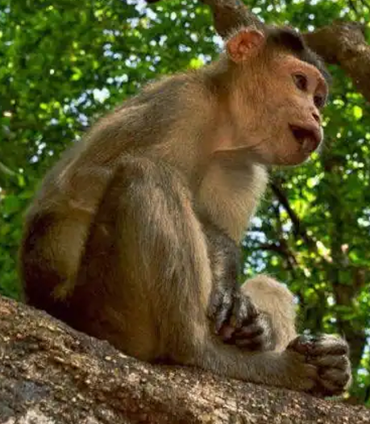

Mollem National Park
Location : Western Ghats of West India, in Dharbandora taluk, Goa State, along the eastern
border with Karnataka
Established in : 1978
Area : 107 km2
Flora : Pristine vegetation classified as West Coast tropical evergreen forests, West Coast
semi-evergreen forests and moist deciduous forests. 722 species of flowering plants in wild belonging to 492
genera and 122 families. 128 species of endemic plants either endemic to Western Ghats, Peninsular India or India occur in the National Park.
Fauna : Mammals include leopard (particularly the black variant), barking deer, Bengal tiger,
bonnet macaque, common langur, civet, flying squirrel, gaur, Malabar giant squirrel, mouse deer, pangolin, porcupine,
slender loris, sambar, spotted deer, wild boar and wild dog.
Birds include drongo, emerald dove, fairy bluebird, golden oriole, greater Indian hornbill, Indian black
woodpecker, Malabar grey hornbill, Malabar pied hornbill, grey-headed myna, grey jungle fowl, large green barbet,
paradise flycatcher, racket-tailed drongo, ruby-throated yellow bulbul (the Goa state bird), shrikes, three-toed
kingfisher, Sri Lanka frogmouth, wagtails.
Butterfly species include blue Mormon, common Jezebel, common Mormon, common mime, plum Judy, common wanderer,
crimson rose, lime butterfly, plain tiger, southern birdwing and tailed jay and one of the most common is the Pygmy
scrub-hopper. It also has endemic species like Malabar tree nymph and Tamil yoeman.
Reptiles found are king cobra, bronzeback tree snake, cat snake, hump-nosed pit viper, Indian rock python, Malabar pit viper,
rat snake, Russell's viper, Indian cobra and common krait.
Features : It contains several important temples dating to the Kadambas of Goa, and home to
waterfalls, such as Dudhsagar Falls and Tambdi Falls.

Mollem National Park

Common langur

Common mime butterfly

Fairy bluebird